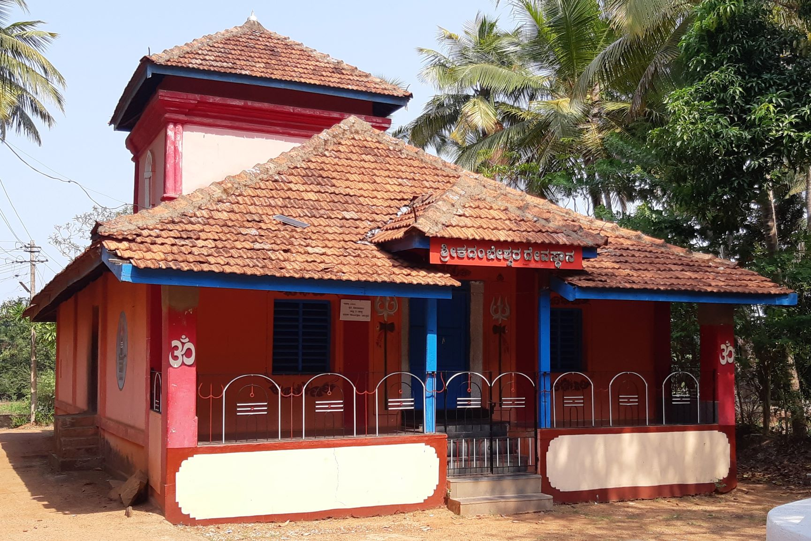
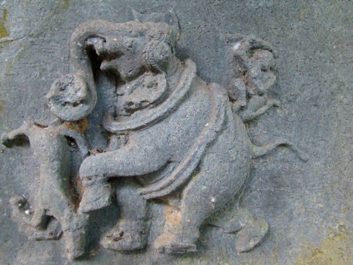

History

Karnataka was having high tradition and ancient history. In the middle of 4th centre in BC i.e. approximately 1600 years back kadamba dynasty were ruled Karnataka for nearly 200 years. In those days Ankola was famous for good education facility and with high ancient traditions. In those days in Kumbarkeri area Shri Kadambeshwar temple was built. It is having its own speciality and devine power and famous for it
Location
The temple is located in the karnataka state, Uttar kdannda district, Ankola Taluk kumbarkeri, the